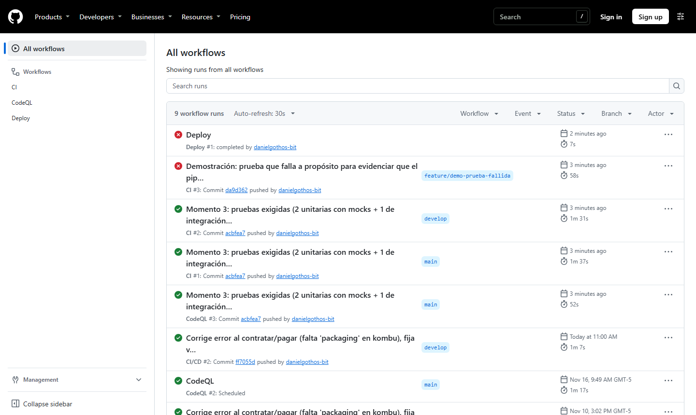
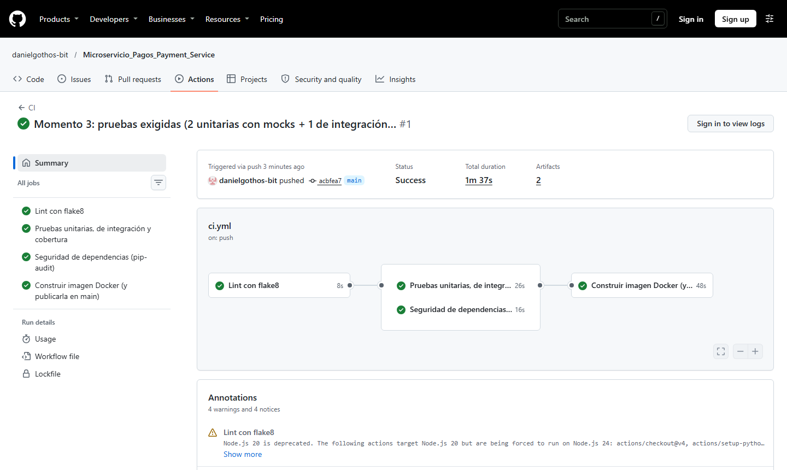
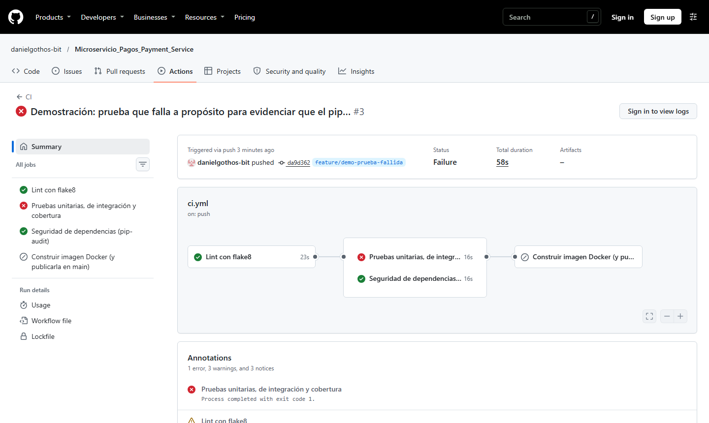
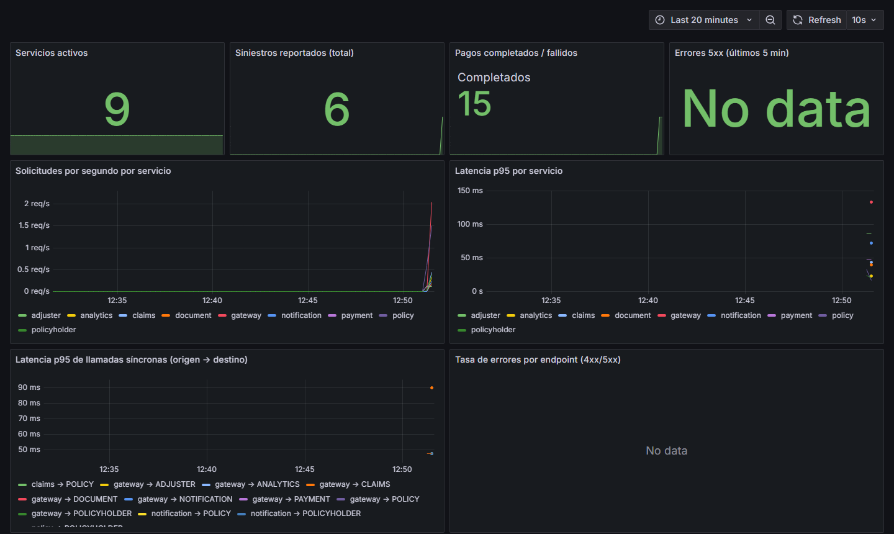

SUSTENTACIÓN FINAL, ARQUITECTURA Y MODELAMIENTO DE SOFTWARE
InsureFlow: seguros de auto, hogar y vida en línea
Un cliente puede cotizar, comprar, pagar y reclamar su seguro desde la página, y el personal de la aseguradora gestiona esos casos. Lo construimos con 8 microservicios, un API Gateway y despliegue automático en Render.
El problema que quisimos resolver
Momento 1 de 5. Contexto y usuarios
Lo que pasa hoy en una aseguradora pequeña
Para comprar un seguro hay que llamar o ir a una oficina, esperar una propuesta y llenar papeles. Cuando el cliente tiene un accidente, reporta el caso y queda a ciegas: no sabe si ya le asignaron un perito, si lo aprobaron o cuándo le pagan.
Por dentro tampoco es mejor: los cobros, las indemnizaciones y los documentos están en sistemas distintos, y nadie tiene a la mano cuánto se cobra contra cuánto se paga, ni qué casos huelen a fraude.
Necesidades que detectamos
- Cotizar y contratar en línea, sin oficina.
- Seguir el siniestro paso a paso.
- Separar quién evalúa el daño de quién decide el pago.
- Ver indicadores del negocio en un solo lugar.
Quiénes usan el sistema
| Cliente | Cotiza, compra, paga sus cuotas, reporta siniestros y ve en qué va su caso. |
| Perito | Recibe las inspecciones que le asigna el sistema y envía su informe de daños. No decide el pago. |
| Gestor de seguros | Verifica la identidad de los clientes, maneja pólizas y pagos, y decide si un siniestro se paga o se rechaza. |
| Administrador | Mira los indicadores del negocio, el estado de los servicios y crea o desactiva las cuentas del personal. |
Objetivo, justificación y alcance
Momento 1 de 5. Necesidades de solución
Objetivo
Construir una plataforma web donde un cliente pueda cotizar, comprar, pagar y reclamar un seguro de auto, hogar o vida, y donde el personal de la aseguradora gestione esos casos, usando una arquitectura de microservicios desplegada y monitoreada en la nube.
¿Por qué microservicios y no un monolito?
Porque los dominios son muy distintos: no es lo mismo cobrar una cuota que asignar un perito. Separándolos, si Pagos se cae el cliente igual puede cotizar y reportar un siniestro; cada servicio tiene su base de datos, su repositorio y se despliega sin tocar a los demás. Lo comprobamos en vivo apagando un servicio.
¿Por qué una Saga?
Resolver un siniestro toca cinco servicios (siniestros, peritaje, pagos, documentos y notificaciones). No hay una transacción única que los cubra a todos, así que cada paso publica un evento y, si el pago falla, hay una acción que compensa.
Lo que sí hace
- Sitio público con cotizador de 3 planes por producto.
- Portal del cliente: compra, pagos con PSE, tarjeta o transferencia, siniestros, documentos y notificaciones.
- Portal de gestión separado para gestor, perito y administrador.
- 8 microservicios, API Gateway con JWT, CI/CD, pruebas y monitoreo.
Lo que dejamos por fuera
- Cobro con dinero real: la pasarela está simulada, pero detrás de una interfaz que se puede cambiar por una real.
- SMS reales (el correo funciona si se configura un servidor SMTP).
- App móvil nativa: el portal web funciona en el celular.
Arquitectura general
Momento 2 de 5. Clic en cada bloque para ver el detalle
Qué hace cada microservicio
Momento 2 de 5. Un dominio por servicio
Cómo se comunican los servicios
Momento 2 de 5. REST cuando se necesita la respuesta ya, eventos para lo demás
Llamadas REST (síncronas)
Las usamos solo cuando un servicio no puede seguir sin la respuesta. El caso típico: antes de crear un siniestro, Siniestros le pregunta a Pólizas si la póliza tenía cobertura ese día (GET /api/v1/polizas/{id}/cobertura). Si no la tenía, el reporte se rechaza.
Como el otro servicio puede estar lento o caído, cada llamada tiene timeout, 3 reintentos con espera creciente y un circuit breaker que corta las llamadas después de 3 fallos seguidos y vuelve a probar a los 30 segundos (comun/clientes.py).
Eventos (asíncronos)
Para todo lo demás, el servicio dueño del dato publica un evento y los interesados reaccionan. Siniestros no sabe cómo se asigna un perito; solo avisa que se abrió un caso. Celery reintenta la entrega si el destino no responde y cada evento se procesa una sola vez aunque llegue repetido.
Esto significa que los datos se ponen al día unos segundos después (consistencia eventual). Lo vimos en la práctica: el caso pasa a "Inspección" un momento después de que Peritaje asigna el perito.
| Evento | Lo publica | Lo consumen |
|---|---|---|
| policy.issued / renewed / cancelled | Pólizas | Notificaciones, Analítica |
| policyholder.created / kyc_updated | Asegurados | Queda registrado para auditoría |
| claim.opened | Siniestros | Peritaje (asigna perito), Notificaciones, Analítica |
| inspection.scheduled / completed | Peritaje | Siniestros (el caso queda listo para que el gestor decida), Documentación (guarda el informe) |
| claim.approved / rejected / documentation_requested | Siniestros | Pagos (paga si se aprobó), Notificaciones, Analítica |
| payment.completed / failed | Pagos | Siniestros, Documentación (comprobante), Notificaciones, Analítica |
Patrón Saga: de reportar un siniestro al pago
Momento 2 de 5. Saga por coreografía, sin orquestador central
claim.openedinspection.completed. El caso no se paga soloclaim.approved) o rechaza (claim.rejected)¿Y si el pago falla?
Pagos publica payment.failed. Siniestros lo recibe y deja el caso como aprobado, pendiente de pago: el siniestro sigue siendo válido, solo falta pagarlo. Queda en el historial y se le avisa al equipo. Esa es la acción compensatoria (siniestros/handlers.py).
Un cambio que hicimos en el camino
Al principio el informe del perito aprobaba y pagaba solo. Probando nos dimos cuenta de que un perito podía escribir "no procede" y el sistema pagaba igual. Lo cambiamos: el perito evalúa y el gestor decide con ese informe a la vista.
Reglas de negocio que respeta el sistema
Momento 2 de 5. Lógica de dominio en cada servicio
| Regla | Cómo se cumple |
|---|---|
| No se reporta un siniestro sin cobertura | Siniestros valida contra Pólizas la vigencia en la fecha del incidente. Si no hay cobertura responde 422 y no crea nada. |
| El perito evalúa, el gestor decide | El botón "Aprobar y pagar" solo se habilita cuando ya llegó el informe. "Rechazar" se puede usar antes si el gestor detecta algo raro. |
| Identidad verificada (KYC) | El gestor verifica o rechaza la identidad del cliente. Si la rechaza, el gateway bloquea la cuenta: no puede entrar y su sesión abierta se cierra. Al verificarla se desbloquea. |
| Una póliza cancelada no se cobra | Solo las pólizas vigentes aparecen para pagar y para reportar siniestros. Renovar suma 12 meses a la vigencia. |
| Una indemnización no se paga dos veces | Pagos revisa si el siniestro ya tiene un pago exitoso antes de transferir (idempotencia). |
| Perito desactivado no recibe casos | Cuando el admin desactiva a un perito, el gateway lo marca como no disponible en Peritaje y la asignación automática lo salta. |
| Nada se borra | Pólizas, siniestros y clientes se cancelan, rechazan o bloquean, pero no se eliminan: tienen pagos y casos asociados en otros servicios, y el historial sirve de auditoría. |
Manejo de las bases de datos
Momento 2 de 5. Una base por servicio
Cada servicio con su base
Son 8 bases PostgreSQL. Ningún servicio lee la base de otro; si necesita un dato lo pide por API o lo recibe por un evento. En Render el plan gratis da un servidor PostgreSQL por cuenta, así que en las cuentas con varios servicios cada uno tiene su propia base dentro del mismo servidor.
Integridad sin joins
Como no hay llaves foráneas entre bases, usamos identificadores UUID. Por ejemplo, siniestro.id_poliza guarda el UUID de la póliza y la validación se hace preguntándole a Pólizas.
Normalización
Los servicios transaccionales están en tercera forma normal (beneficiarios aparte de la póliza, historial aparte del siniestro). Analítica usa tablas resumidas tipo estrella porque solo sirve para reportes.
Restricciones en el modelo
CHECK sobre estados y valores (prima mayor o igual a 0, porcentaje de beneficiario entre 0 y 100), cédula única e índices para las consultas frecuentes.
Auditoría
claim_status_history guarda cada cambio de estado del siniestro y document_access_log no permite modificar ni borrar registros.
Migraciones y respaldo
Las migraciones de Django corren solas al arrancar el contenedor. Cada repositorio tiene datos de ejemplo y un respaldo SQL en datos/.
API Gateway y seguridad
Momento 2 de 5. Un solo punto de entrada
El gateway
Todo lo que hace el navegador pasa por el gateway. Él revisa el token, decide si el usuario tiene permiso y reenvía la petición al servicio que corresponde según la ruta (/api/v1/polizas va a Pólizas, /api/v1/siniestros a Siniestros, etc.).
- Sin token o con token vencido: 401, sin molestar al servicio.
- Límite de 60 peticiones por minuto sin sesión y 600 con sesión.
- Registra cada petición en JSON con un
request_id. - Si un servicio está despertando en Render, espera y reintenta.
Usuarios, roles y permisos
- Login con JWT de 30 minutos y refresh de 7 días; contraseñas guardadas con bcrypt.
- Cuatro roles: cliente, perito, gestor y administrador. Un gestor no entra a Analítica y un cliente no entra al portal de gestión.
- Permisos por objeto: un cliente solo ve sus pólizas y siniestros, y un perito solo sus inspecciones. Si pide algo ajeno recibe 403.
- Cuentas bloqueadas (identidad rechazada) o desactivadas no pueden iniciar sesión.
Otras protecciones
Las consultas a la base se hacen con el ORM de Django, así que no hay SQL armado a mano (inyección SQL). React escapa lo que se muestra (XSS). La API no usa cookies, usa el token en el encabezado (CSRF). Los eventos entre servicios llevan un token interno. Las credenciales están en variables de entorno de Render y en GitHub Secrets, no en el código. Los documentos se guardan cifrados.
Tecnologías y por qué las elegimos
Momento 3 de 5. Stack tecnológico
| Para qué | Qué usamos | Por qué |
|---|---|---|
| Lenguajes | Python 3.12 y TypeScript | Python porque es el que más usamos en la carrera y tiene buenas librerías para APIs. TypeScript en el frontend para que los errores de tipos salgan antes de publicar. |
| Backend | Django 6 + Django REST Framework | Trae ORM, migraciones, validación con serializers y autenticación. Usamos la misma base en los 8 servicios, así cualquiera del equipo puede trabajar en cualquiera. |
| Base de datos | PostgreSQL | Es relacional y transaccional, soporta UUID, CHECK e índices, y Render la ofrece administrada. En las pruebas usamos SQLite para que corran rápido. |
| Eventos | Celery + Redis | Nos da colas por servicio y reintentos con espera creciente, que es lo que necesita la Saga. |
| Frontend | React 18, Vite y Tailwind CSS | Componentes reutilizables entre el sitio, el portal del cliente y el de gestión, y el estilo de la marca en un solo archivo de configuración. |
| Seguridad | simplejwt, bcrypt, cryptography, django-cors-headers | Librerías conocidas para tokens, contraseñas y cifrado; no quisimos implementar eso a mano. |
| Contenedores | Docker y Docker Compose | La misma imagen corre en el computador y en Render. Con Compose levantamos los 9 servicios, PostgreSQL, Redis, Prometheus y Grafana con un comando. |
| CI/CD | GitHub Actions, flake8, coverage.py, pip-audit, CodeQL, GHCR | Está en el mismo lugar que el código: cada push corre lint, pruebas con cobertura y revisión de seguridad, y solo despliega si todo pasa. |
| Nube | Render | Despliega contenedores Docker gratis, tiene PostgreSQL y Redis administrados y un Deploy Hook que llamamos desde GitHub Actions. |
| Monitoreo | Prometheus y Grafana | Son el estándar para métricas; cada servicio expone /metrics con prometheus-client. |
| Documentación | drf-spectacular (Swagger) | Genera la documentación desde el código, en /api/docs de cada servicio. |
Pruebas y cobertura
Momento 4 de 5. Dos unitarias con mocks y una de integración por servicio, en tests/
| Servicio | Unitaria 1 | Unitaria 2 | Integración | Pruebas | Cobertura |
|---|
Se corren con USE_SQLITE=1 CELERY_EAGER=1 coverage run manage.py test -v 2 y coverage report. En las unitarias reemplazamos con mocks lo externo: el otro microservicio, el bus de eventos, la pasarela de pagos o el proveedor de SMS. En cada repositorio está la salida en evidencias/ y en GitHub Actions el reporte queda en el resumen y como artefacto reporte-cobertura.
Pipeline CI/CD con GitHub Actions
Momento 4 de 5. Si una prueba falla, no se despliega
# .github/workflows/ci.yml (cada push y pull request) on: push a main, develop, feature/**, hotfix/** y pull_request jobs: lint flake8 pruebas coverage run manage.py test + reporte de cobertura seguridad pip-audit docker construye la imagen (en main la sube a GHCR) # .github/workflows/deploy.yml on: cuando CI termina en main if: CI salió bien # si falló, no hace nada llama al Deploy Hook de Render (secreto RENDER_DEPLOY_HOOK_URL) espera a que /health responda # .github/workflows/codeql.yml análisis de seguridad del código
Ramas
Trabajamos con main (lo que está en producción), develop (integración) y ramas feature/* y hotfix/*. Para mostrar qué pasa cuando algo falla dejamos la rama feature/demo-prueba-fallida en Pagos, con una prueba rota a propósito.

Pestaña Actions de Pagos: CI y Deploy en verde, y la rama de la prueba fallida en rojo.

Ejecución correcta: lint, pruebas, seguridad e imagen.

Con la prueba rota el pipeline se detiene y no se despliega nada.
Monitoreo con Prometheus y Grafana
Momento 4 de 5. Datos reales del sistema corriendo

Dashboard de Grafana: servicios activos, siniestros, pagos, errores, peticiones por segundo y tiempos de respuesta.

Prometheus con los 9 servicios en UP.
Qué medimos
Disponibilidad de cada servicio, peticiones y errores por endpoint, tiempo de respuesta (p95), cuánto tardan las llamadas entre servicios, eventos publicados y siniestros reportados por línea de seguro.
Alertas
En alertas.yml: servicio caído por más de 1 minuto, muchos errores 5xx, pagos fallidos y llamadas entre servicios lentas.
Prueba que hacemos en vivo
Apagamos un servicio en Docker: Prometheus lo marca DOWN, Grafana baja a 8 servicios, se dispara la alerta y la página sigue funcionando en todo lo que no depende de ese servicio.
Problemas que tuvimos y cómo los resolvimos
Lo que aprendimos desplegando de verdad
| Qué pasó | Por qué | Qué hicimos |
|---|---|---|
| En la revisión no se pudo comprar un seguro | Las librerías no tenían versión fija; Render instaló una versión nueva de kombu que necesitaba un paquete que no estaba. | Fijamos la versión exacta de cada dependencia en requirements.txt y agregamos pip-audit al pipeline. |
| Todo Render dejó de responder | Las bases PostgreSQL gratis vencen a los 30 días. | Las recreamos y juntamos los servicios en 3 cuentas, cada uno con su propia base dentro del servidor de esa cuenta. |
| En analítica aparecía una línea "desconocido" | Pólizas tenía todavía la dirección vieja de Analítica y Notificaciones, así que esos eventos no llegaban. | Corregimos las variables de entorno y limpiamos los datos mal clasificados con una migración. |
| Un informe que decía "no procede" igual se pagaba | El informe del perito aprobaba el caso automáticamente. | Ahora el gestor decide después de leer el informe. |
| De noche no se podía reportar un siniestro | Las fechas se calculaban en hora UTC y el sistema veía la hora como futura. | Usamos la hora local de Colombia en el frontend. |
Demostración en vivo
Momento 5 de 5. Sobre el sistema desplegado en Render
Orden de la demostración
- Un cliente nuevo cotiza, crea su cuenta, compra un seguro y paga con tarjeta.
- Reporta un siniestro y el sistema le asigna el perito de esa línea.
- El perito entra y envía su informe.
- El gestor lee el informe y aprueba el pago (o lo rechaza).
- El cliente ve el caso pagado, el comprobante y las notificaciones.
- El administrador revisa el panel de control y la analítica.
- En Docker apagamos un servicio y lo vemos en Grafana.
Sitio, portal de gestión, estado de los servicios y Swagger de Pagos. Los usuarios del personal (admin, gestor y peritos) se los entregamos al profesor ese día.
Requerimientos que se validan
| Crear | Cliente, póliza, pago y siniestro. |
| Consultar | Mis seguros, historial de pagos, seguimiento del caso, analítica. |
| Actualizar | Datos de contacto, verificación de identidad, renovación de póliza, decisión sobre el siniestro. |
| Cancelar | Cancelar póliza, rechazar siniestro, rechazar identidad (bloquea la cuenta), desactivar un perito. |
| Comunicar | La Saga del siniestro entre Siniestros, Peritaje, Pagos, Documentación y Notificaciones. |
Errores y casos alternos que se pueden mostrar
Siniestro con fecha sin cobertura: se rechaza con 422.
Servicio apagado: el resto sigue funcionando y la página muestra un mensaje claro.
Pago de indemnización fallido: el caso queda aprobado, pendiente de pago.
Cliente con identidad rechazada: no puede iniciar sesión.
Cliente pidiendo datos de otro: 403.
Datos inválidos (cédula repetida, fechas al revés): 400 con el detalle.
Matriz de cumplimiento
Parte A.1. Requerimientos del documento de arquitectura por servicio
| Microservicio | Asignados | Cumplidos | % cumplimiento | Elementos técnicos | Pendiente o parcial |
|---|
Contamos como requerimientos los endpoints (sección 4 del documento), los eventos (5.10), el modelo de datos (sección 5) y las reglas de negocio de cada servicio. Lo que aparece como pendiente funciona, pero simulado o de otra forma; en la última columna explicamos cómo.
Repositorios y despliegues
Parte A.2 y A.3. Un repositorio, una base y un despliegue por servicio
| Microservicio | Repositorio (GitHub) | Despliegue (Render) | Documentación API |
|---|
Qué tiene cada repositorio
README con instalación, endpoints y variables; .env.example y .gitignore (sin credenciales); tests/, evidencias/, datos/ con ejemplo y respaldo; Dockerfile y render.yaml.
En local
InsureFlow_Local/docker-compose.yml levanta los 9 servicios con PostgreSQL, Redis, Prometheus y Grafana.
Frontend
InsureFlow_Frontend en React. Lo compilamos dentro del gateway, así todo queda en un mismo enlace.
Para terminar
Separar el sistema en ocho servicios nos obligó a pensar bien quién es dueño de cada dato y cómo se avisan los cambios. Lo que más nos enseñó fue desplegarlo: una base que vence, una librería que se actualiza sola o una variable de entorno vieja rompen cosas que en el computador funcionaban. Por eso terminamos con versiones fijas, pruebas antes de cada despliegue y monitoreo para ver qué está fallando.
Gracias. ¿Preguntas?